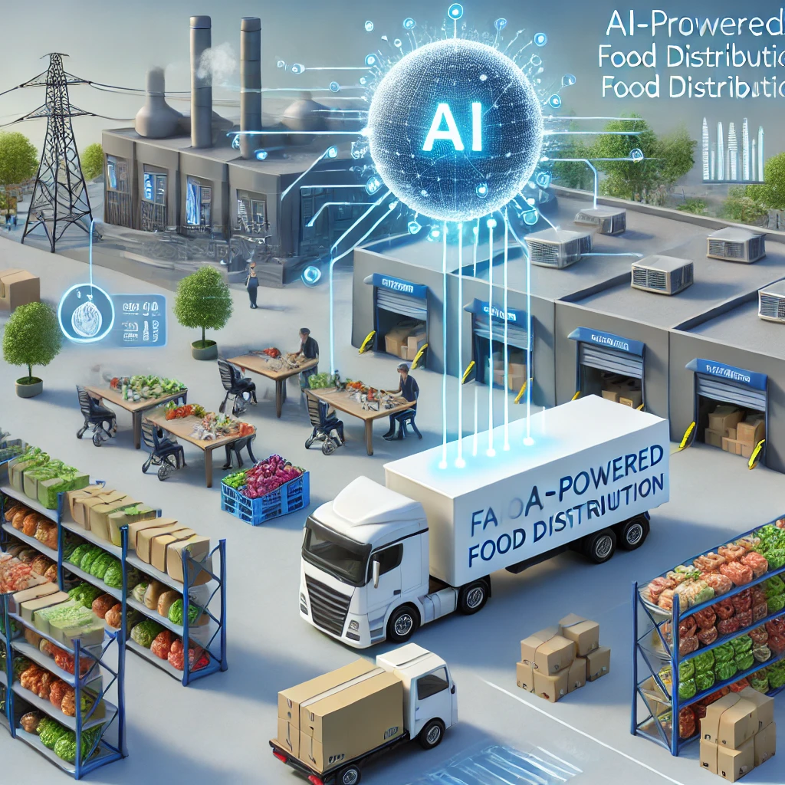
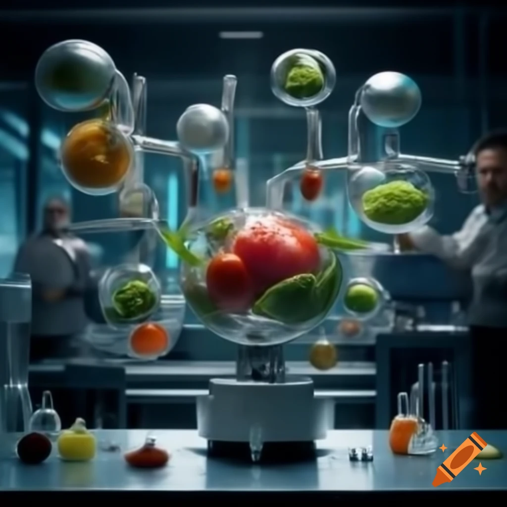
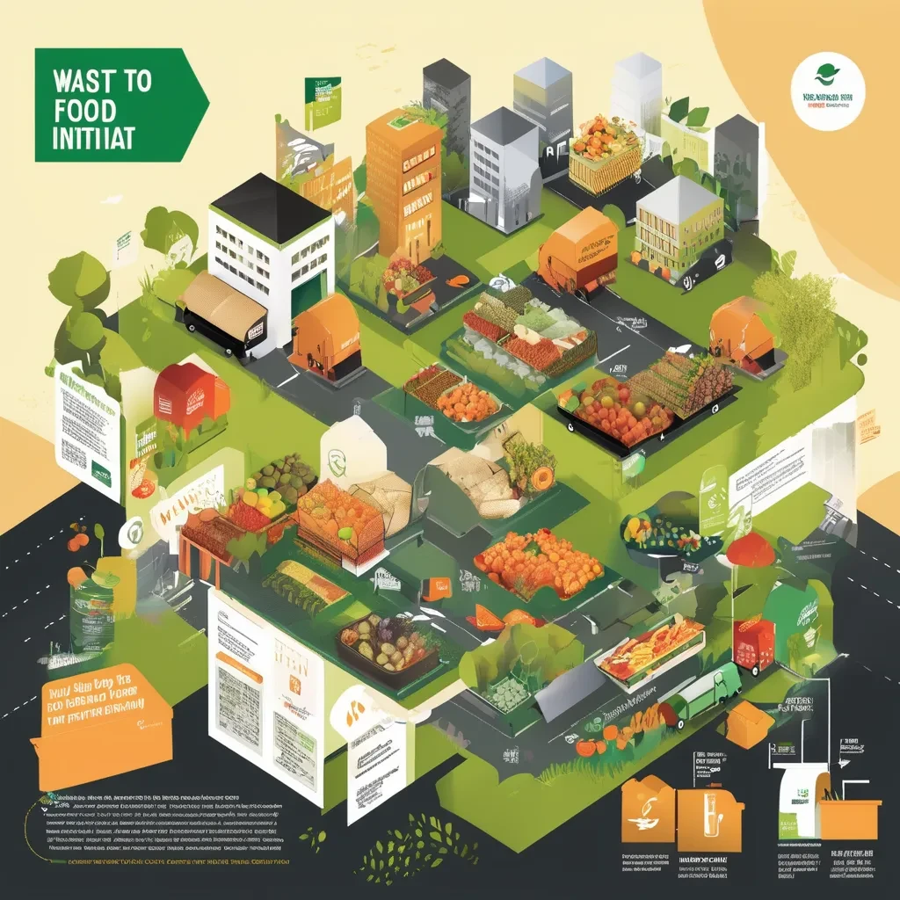
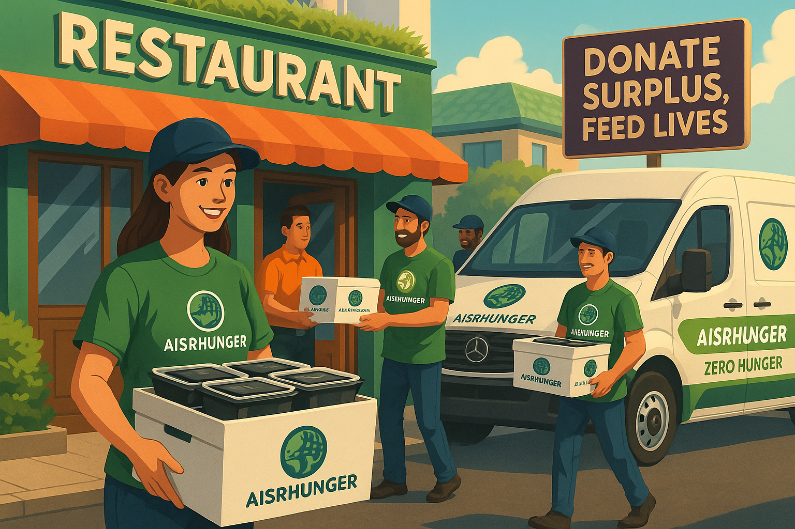

Innovative Solutions for Zero Hunger

AI-Powered Food Distribution
Our AI system ensures food reaches the right locations by using predictive analytics to optimize logistics, reduce delays, and prevent food waste.
Blockchain for Food Transparency
Secure food tracking systems ensure food safety, monitor supply chains, and prevent fraud using AI-powered blockchain solutions.
AI-Driven Smart Farming
AI enables farmers to make data-driven decisions for precision farming, soil health analysis, and automated irrigation for maximum efficiency.

AI for Food Quality & Safety
AI-powered sensors analyze food freshness, quality, and shelf-life to prevent spoilage and ensure safe distribution.

Waste to Food Initiative
Transforming food waste into nutritious meals! We utilize bio-material recycling, composting, and innovative AI-powered waste conversion technologies to create sustainable food sources.

Fireless Cooking
A sustainable method of preparing meals without fire! Using insulation-based heat retention, we ensure cooking is energy-efficient, safe, and accessible to all.

Instant Meal Packets
Just add hot water, and a nutritious meal is ready! These packets are designed to provide quick, easy, and healthy food solutions, reducing hunger in crisis situations.

Restaurant Surplus Rescue
Every day, tons of safe food from restaurants and cafes go to waste. With AI5R0Hunger, we partner with food businesses to collect this surplus and deliver it to hunger-stricken communities. Join us to reduce waste and feed more lives!
Join the AI5R0Hunger Movement!
Be a part of the revolution and help us drive sustainable food security through AI-powered solutions!
Get Involved